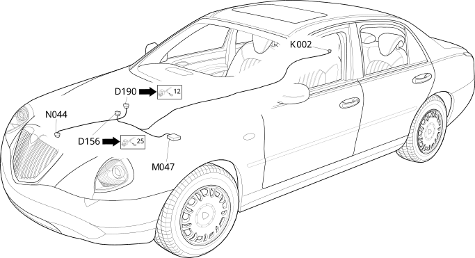

120 bridge for tyre inflation pressure control unit
- Path
- Electrical equipment > Wiring > 120 bridge for tyre inflation pressure control unit
- Kind
- wiring harness
- Applies to
- all engines; all production periods
- Interactive page
- https://sloeber94.github.io/elrnDB-lThss/en/#/500840
Applies to: all engines; all production periods

Topics that link to this page (5)
- D156 Tyre inflation pressure control unit coupling(BRIDGE FOR TYRE INFLATION PRESSURE CONTROL UNIT)
- D190 Front/Webasto pump coupling(FRONT)
- K002 Headlamp alignment corrector rear potentiometer (CAF)(BRIDGE FOR TYRE INFLATION PRESSURE CONTROL UNIT)
- M047 Tyre inflation pressure control unit(BRIDGE FOR TYRE INFLATION PRESSURE CONTROL UNIT)
- N044 Additional heater electric pump(BRIDGE FOR TYRE INFLATION PRESSURE CONTROL UNIT)